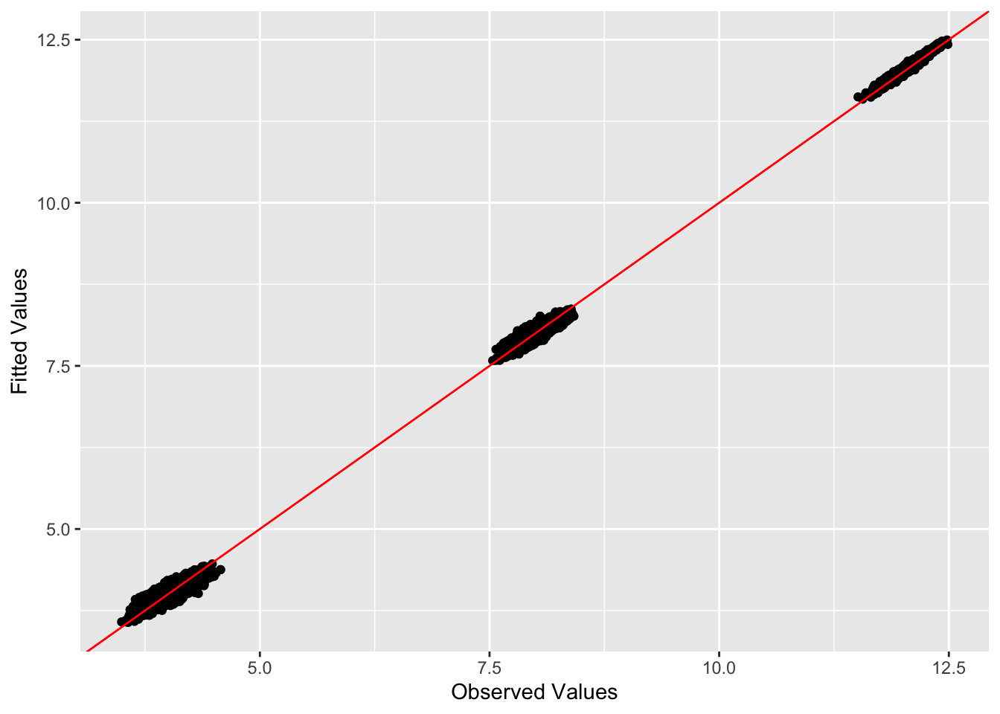

convergence-comparison-experiments
Annie Xie
2024-08-27
Last updated: 2024-10-02
Checks: 7 0
Knit directory: EBCD_GBCD_comparison/
This reproducible R Markdown analysis was created with workflowr (version 1.7.1). The Checks tab describes the reproducibility checks that were applied when the results were created. The Past versions tab lists the development history.
Great! Since the R Markdown file has been committed to the Git repository, you know the exact version of the code that produced these results.
Great job! The global environment was empty. Objects defined in the global environment can affect the analysis in your R Markdown file in unknown ways. For reproduciblity it’s best to always run the code in an empty environment.
The command set.seed(20240229) was run prior to running
the code in the R Markdown file. Setting a seed ensures that any results
that rely on randomness, e.g. subsampling or permutations, are
reproducible.
Great job! Recording the operating system, R version, and package versions is critical for reproducibility.
Nice! There were no cached chunks for this analysis, so you can be confident that you successfully produced the results during this run.
Great job! Using relative paths to the files within your workflowr project makes it easier to run your code on other machines.
Great! You are using Git for version control. Tracking code development and connecting the code version to the results is critical for reproducibility.
The results in this page were generated with repository version 6bf4982. See the Past versions tab to see a history of the changes made to the R Markdown and HTML files.
Note that you need to be careful to ensure that all relevant files for
the analysis have been committed to Git prior to generating the results
(you can use wflow_publish or
wflow_git_commit). workflowr only checks the R Markdown
file, but you know if there are other scripts or data files that it
depends on. Below is the status of the Git repository when the results
were generated:
Ignored files:
Ignored: .DS_Store
Ignored: .Rhistory
Ignored: code/.DS_Store
Ignored: data/.DS_Store
Untracked files:
Untracked: analysis/driftr-comparison.Rmd
Untracked: code/drift_functions.R
Note that any generated files, e.g. HTML, png, CSS, etc., are not included in this status report because it is ok for generated content to have uncommitted changes.
These are the previous versions of the repository in which changes were
made to the R Markdown
(analysis/convergence-comparison-experiments.Rmd) and HTML
(docs/convergence-comparison-experiments.html) files. If
you’ve configured a remote Git repository (see
?wflow_git_remote), click on the hyperlinks in the table
below to view the files as they were in that past version.
| File | Version | Author | Date | Message |
|---|---|---|---|---|
| Rmd | 6bf4982 | Annie Xie | 2024-10-02 | Add more divergence factorization experiments |
Introduction
In this analysis, we are interested in comparing the convergence properties between EBCD and flash-Cov. We will run EBCD with the point-Laplace prior and flash-Cov with a point-Laplace prior on a simulated dataset. We will compare the number of iterations it takes for the algorithms to converge. We will also look at the progression of the objective function values (these will not be directly comparable since the methods have different objective functions). We will also compare the estimates and see if they both converge to the same local optima.
Packages and Functions
library(ggplot2)
library(cowplot)
library(RColorBrewer)
library(ggrepel)
library(pheatmap)
library(gridExtra)
#library(Seurat)
library(Matrix)
library(ebnm)
library(flashier)
library(magrittr)
library(ashr)
library(irlba)
library(reshape2)
library(patchwork)
Attaching package: 'patchwork'The following object is masked from 'package:cowplot':
align_plotslibrary(fastTopics)Warning: package 'fastTopics' was built under R version 4.3.3plot_heatmap <- function(L, title = "", colors_range = c("gray96", "red"), brks = NULL){
### define the color map
cols <- colorRampPalette(colors_range)(49)
if (is.null(brks) == TRUE){
brks <- seq(min(L), max(L), length=50)
}
plt <- pheatmap(L, show_rownames = FALSE, show_colnames = FALSE, cluster_rows = FALSE, cluster_cols = FALSE, color = cols, breaks = brks, main = title)
return(plt)
}source("code/ebcd_functions.R")#adapted from code used in Jason's thesis
plot_loadings <- function(L_est, Pop){
n <- nrow(L_est)
k <- ncol(L_est)
Idx <- rep(c(1:n), k)
Loading <- c(L_est)
Factor <- paste0('k=',c(sapply(c(1:k), function(x, n){rep(x, n)}, n = n)))
tib <- data.frame(Idx, Loading, Factor, Pop)
plt <- ggplot(tib, aes(x = Idx, y = Loading, col = Pop)) +
geom_point() +
geom_hline(yintercept = 0, linetype = "dashed") +
facet_grid(cols = vars(Factor)) +
theme(axis.title.x = element_blank(),
axis.title.y = element_blank(),
axis.ticks.x = element_blank(),
axis.ticks.y = element_blank(),
axis.text.x = element_blank(),
axis.text.y = element_blank(),
panel.spacing = unit(1, "lines"))
plot(plt)
}compute_bures_wasserstein_distance <- function(A, B){
trA <- sum(diag(A))
trB <- sum(diag(B))
svdA <- svd(A)
sqrtA <- svdA$u %*% sqrt(diag(svdA$d)) %*% t(svdA$u)
# eigA <- eigen(A, symmetric = TRUE)
# sqrtA <- eigA$vectors %*% diag(sqrt(eigA$values)) %*% t(eigA$vectors)
C <- sqrtA %*% B %*% sqrtA
svdC <- svd(C)
sqrtC <- svdC$u %*% sqrt(diag(svdC$d)) %*% t(svdC$u)
# eigC <- eigen(C, symmetric = TRUE)
# sqrtC <- eigC$vectors %*% diag(sqrt(eigC$values)) %*% t(eigC$vectors)
inner_trace <- sum(diag(sqrtC))
bw_dist <- (trA + trB - 2*inner_trace)
return(bw_dist)
}Example 1: Balanced Tree
In Example 1, we will simulate data from a balanced tree. Throughout this analysis, we will use the following notation: \(n_A\), \(n_B\), \(n_C\), and \(n_D\) are the sample sizes for the four different populations. \(\sigma_{ABC}^2\), \(\sigma_{AB}^2\), \(\sigma_{CD}^2\), \(\sigma_A^2\), \(\sigma_B^2\), \(\sigma_C^2\), and \(\sigma_D^2\) are the variances of the drift events. \(p\) is the number of genes. \(\sigma_{\epsilon}^2\) is the variance of the noise. We will use the same settings that Jason used in his thesis – \(n_A = n_B = n_C = n_D = 40\), \(\sigma_{ABC}^2 = \sigma_{AB}^2 = \sigma_{CD}^2 = \sigma_A^2 = \sigma_B^2 = \sigma_C^2 = \sigma_D^2 = 2^2\), \(p=1000\), and \(\sigma_{\epsilon}^2 = 1\).
Data Generation
sim_4pops <- function(pop_sizes,
branch_sds,
indiv_sd,
n_genes = 1000,
constrain_F = FALSE,
seed = 666) {
set.seed(seed)
n <- sum(pop_sizes)
p <- n_genes
FF <- matrix(rnorm(7 * p, sd = rep(branch_sds, each = p)), ncol = 7)
if (constrain_F) {
FF_svd <- svd(FF)
FF <- FF_svd$u
FF <- t(t(FF) * branch_sds * sqrt(p))
}
LL <- matrix(0, nrow = n, ncol = 7)
LL[, 1] <- 1
LL[, 2] <- rep(c(1, 1, 0, 0), times = pop_sizes)
LL[, 3] <- rep(c(0, 0, 1, 1), times = pop_sizes)
LL[, 4] <- rep(c(1, 0, 0, 0), times = pop_sizes)
LL[, 5] <- rep(c(0, 1, 0, 0), times = pop_sizes)
LL[, 6] <- rep(c(0, 0, 1, 0), times = pop_sizes)
LL[, 7] <- rep(c(0, 0, 0, 1), times = pop_sizes)
# Only true for trees with no admixture:
divmat <- matrix(nrow = n, ncol = 4)
divmat[, 1] <- LL[, 1]
divmat[, 2] <- LL[, 2] - LL[, 3]
divmat[, 3] <- LL[, 4] - LL[, 5]
divmat[, 4] <- LL[, 6] - LL[, 7]
E <- matrix(rnorm(n * p, sd = indiv_sd), nrow = n)
pops <- rep(LETTERS[1:length(pop_sizes)], times = pop_sizes)
return(list(Y = LL %*% t(FF) + E, LL = LL, FF = FF, divmat = divmat, pops = pops))
}sim_data_4pop <- sim_4pops(pop_sizes = rep(40, 4),
branch_sds = rep(2, 7),
indiv_sd = 1,
n_genes = 1000,
constrain_F = TRUE,
seed = 666)This is a heatmap of the loadings matrix, \(L\):
plot_heatmap(sim_data_4pop$LL)
This is a heatmap of \(F^{T}F\):
plot_heatmap(crossprod(sim_data_4pop$FF))
observed.vals1 <- tcrossprod(sim_data_4pop$Y)/ ncol(sim_data_4pop$Y)This is a heatmap of the Gram matrix, \(XX^{T}/p\):
plot_heatmap(observed.vals1)
EBCD with point-Laplace prior
Analysis
set.seed(6287)
# ebcd_backfit_eps <- nrow(sim_data_4pop$Y)*ncol(sim_data_4pop$Y)*sqrt(.Machine$double.eps)
fit.ebcd1 <- ebcd(X = t(sim_data_4pop$Y), Kmax = 4, maxiter_backfit = 10000, ebnm_fn = ebnm::ebnm_point_laplace)This is a heatmap of the estimate of \(L\), \(\hat{L}\):
max_abs_val <- max(max(fit.ebcd1$EL), abs(min(fit.ebcd1$EL)))
plot_heatmap(fit.ebcd1$EL, colors_range = c('blue','red'), brks = seq(-1*max_abs_val, max_abs_val, length=50))This is a scatter plot of the entries of \(\hat{L}\), separated by factor:
plot_loadings(fit.ebcd1$EL, c(rep('A', 40), rep('B', 40), rep('C', 40), rep('D', 40)))ebcd.laplace.fitted.vals1 <- tcrossprod(fit.ebcd1$EL)This is the L2 norm of the difference between the observed values and the fitted values.
sum((observed.vals1 - ebcd.laplace.fitted.vals1)^2)[1] 253.8915This is the L2 norm of the difference between the off-diagonal entries of the observed values and fitted values.
sum((observed.vals1 - ebcd.laplace.fitted.vals1)^2) - sum((diag(observed.vals1) - diag(ebcd.laplace.fitted.vals1))^2)[1] 101.5824This is the Bures-Wasserstein distance between the observed values and the fitted values.
compute_bures_wasserstein_distance(observed.vals1, ebcd.laplace.fitted.vals1)[1] 155.0867This is a plot of (a subset of) the off-diagonal entries of the fitted values vs. observed values:
set.seed(3952)
diag_idx <- seq(1, prod(dim(observed.vals1)), length.out = ncol(observed.vals1))
off_diag_idx <- setdiff(c(1:prod(dim(observed.vals1))), diag_idx)
samp.vals <- sample(off_diag_idx, size = 10000)ggplot(data = NULL, aes(x = c(as.matrix(observed.vals1))[samp.vals], y = c(ebcd.laplace.fitted.vals1)[samp.vals])) + geom_point() + xlab('Observed Values') + ylab('Fitted Values') + geom_abline(slope = 1, intercept = 0, color = 'red')
This is a plot of the progression of the objective function
ggplot(data = NULL, aes(x = c(1:length(fit.ebcd1$vec.obj)), y = fit.ebcd1$vec.obj)) + geom_line()This is the number of iterations that the backfit did before the convergence criterion was satisfied:
length(fit.ebcd1$vec.obj)[1] 10000This is the value of the objective function that was attained:
fit.ebcd1$vec.obj[length(fit.ebcd1$vec.obj)][1] -226901.6Observations
We hoped that EBCD would find the tree-structured loadings matrix. However, it has not. It has found a solution that I think is more sparse than the solution we desired. The EBCD estimate still has a pretty good fit to the observed values, so this may suggest an identifiability issue with this problem. This is also very likely due to the use of the point laplace prior, which does not force the entries of the loadings matrix to have ternary structure.
In the plot of the objective function, we see that the objective function makes a large jump at around iteration 9400. Matthew and I have hypothesized that these jumps correspond to the solution becoming more sparse. Another note is that EBCD reached the maximum number of iterations, which I had set to 10000. So it’s possible that the method would converge to a different solution if given the time. I also think the convergence tolerance plays a role in this. I’ve seen examples where EBCD looks like it is converging, but then it finds a new solution, leading to a jump in the objective function value. Therefore, if the convergence tolerance is too high, it is possible that the algorithm will stop prematurely.
EBMF-Cov with point-Laplace prior
Analysis
# sink('~/Desktop/EBCD_GBCD_comparison_data/flash_cov_laplace.tsv')
flash_cov_fit1 <- flash_init(data = observed.vals1, var_type = 0) %>%
flash_set_verbose(-1) %>%
flash_greedy(ebnm_fn = ebnm::ebnm_point_laplace, Kmax = 4) %>%
flash_backfit()Type Factor Iter ELBO ELBO.diff LF.max.chg
greedy 1 1 -68400.53 NA 0.00032924485150615
greedy 1 2 -68400.48 0.0485169292078353 6.0013607798684e-05
greedy 1 3 -68400.48 0.001179337137728 1.10433040522995e-05
greedy 1 4 -68400.48 3.99862910853699e-05 2.03499415299402e-06
greedy 2 1 -48730.88 NA 0.000272340861214734
greedy 2 2 -48730.86 0.0188534918706864 3.06150189109816e-05
greedy 2 3 -48730.86 6.32810042588972e-05 3.46687428648407e-06
greedy 3 1 -41835.92 NA 0.00116886423925104
greedy 3 2 -41833.27 2.64506136025739 0.00121266723445427
greedy 3 3 -41830.56 2.71113520672225 0.00123692015720817
greedy 3 4 -41827.77 2.79330826909427 0.00126112625148641
greedy 3 5 -41824.89 2.87728455076285 0.00128556836377774
greedy 3 6 -41821.93 2.96331333182025 0.00131025084639057
greedy 3 7 -41818.88 3.05126380483125 0.0013351724535809
greedy 3 8 -41815.74 3.14152814734553 0.00136033581742961
greedy 3 9 -41812.50 3.23392927744862 0.0013857429967906
greedy 3 10 -41809.17 3.32873992097302 0.00141139794623776
greedy 3 11 -41805.75 3.42603937044623 0.00143730594927648
greedy 3 12 -41802.22 3.52596847737004 0.00146347353818212
greedy 3 13 -41798.59 3.62870480011043 0.00148990653641532
greedy 3 14 -41794.86 3.73435776075348 0.00151661276650522
greedy 3 15 -41791.02 3.8431542035396 0.00154358463764154
greedy 3 16 -41787.06 3.9551784382129 0.00157080014547756
greedy 3 17 -41782.99 4.07039242162136 0.00159818259222657
greedy 3 18 -41778.80 4.1885729561327 0.00162556018856734
greedy 3 19 -41774.49 4.30882050556102 0.0016525641609759
greedy 3 20 -41770.06 4.42909779385081 0.00167847625742354
greedy 3 21 -41765.52 4.54523300955771 0.00170199657949524
greedy 3 22 -41760.87 4.6496210074547 0.00172096603062418
greedy 3 23 -41756.14 4.7293196550745 0.0017320849488407
greedy 3 24 -41751.37 4.76434541477647 0.00173333079099624
greedy 3 25 -41746.65 4.72802896513895 0.00172770298577027
greedy 3 26 -41741.80 4.8435184747359 0.0031851386990005
greedy 3 27 -41622.60 119.206575734795 0.0139024608238704
greedy 3 28 -41572.19 50.4043247554946 0.00889173109004925
greedy 3 29 -41572.17 0.0191499810753157 7.10358719286115e-05
greedy 3 30 -41572.17 1.68441329151392e-06 6.94657530985582e-07
greedy 4 1 -18620.34 NA 0.00433098305528442
greedy 4 2 -18620.34 0.00683174257937935 4.34860363328269e-05
greedy 4 3 -18620.34 3.23230779031292e-07 2.13050789141982e-07
backfit all 1 11754.17 30374.5090440428 0.000296155096383008
backfit all 2 19193.86 7439.68660473275 0.00453306091619034
backfit all 3 19246.35 52.4897287155145 0.00110201125582487
backfit all 4 19279.15 32.799830521195 0.000781212706257475
backfit all 5 19293.21 14.0564308367175 0.000767923565046118
backfit all 6 19300.93 7.72786885344976 0.000782700282981975
backfit all 7 19301.19 0.253300805692561 4.84227400638509e-05
backfit all 8 19301.46 0.276272645682184 6.35467976094258e-05
backfit all 9 19301.68 0.214524789105781 6.50895985927573e-05
backfit all 10 19301.81 0.128336458434205 6.26911677536325e-05
backfit all 11 19301.84 0.0350975406508951 7.2901924476117e-05
backfit all 12 19301.84 0.00308977565146051 7.69402049518295e-06
backfit all 13 19301.85 0.00262800494238036 9.82870892239792e-06
backfit all 14 19301.85 0.00148522190283984 9.92041616297069e-06
backfit all 15 19301.85 0.000665235107589979 9.37314931060123e-06
backfit all 16 19301.85 0.000144486661156407 1.30628475977041e-06progress_flash_cov <- read.delim('~/Desktop/EBCD_GBCD_comparison_data/flash_cov_laplace.tsv')
# sink()This is a heatmap of the estimate of \(L\), \(\hat{L}\):
max_abs_val <- max(max(flash_cov_fit1$L_pm), abs(min(flash_cov_fit1$L_pm)))
plot_heatmap(flash_cov_fit1$L_pm, colors_range = c('blue','red'), brks = seq(-1*max_abs_val, max_abs_val, length=50))This is a scatter plot of the entries of \(\hat{L}\), separated by factor:
plot_loadings(flash_cov_fit1$L_pm, c(rep('A', 40), rep('B', 40), rep('C', 40), rep('D', 40)))flash_cov_fit_rescale <- ldf(flash_cov_fit1)
flash_cov_fit_L_rescale <- flash_cov_fit_rescale$L %*% diag(sqrt(flash_cov_fit_rescale$D))
flash.laplace.fitted.vals1 <- tcrossprod(flash_cov_fit_L_rescale)This is the L2 norm of the difference between the observed values and the fitted values.
sum((observed.vals1 - flash.laplace.fitted.vals1)^2)[1] 179.1091This is the L2 norm of the difference between the off-diagonal entries of the observed values and fitted values.
sum((observed.vals1 - flash.laplace.fitted.vals1)^2) - sum((diag(observed.vals1) - diag(flash.laplace.fitted.vals1))^2)[1] 28.77097This is the Bures-Wasserstein distance between the observed values and the fitted values.
compute_bures_wasserstein_distance(observed.vals1, flash.laplace.fitted.vals1)[1] 154.9221This is a plot of (a subset of) the off-diagonal entries of the fitted values vs. observed values:
set.seed(3952)
diag_idx <- seq(1, prod(dim(observed.vals1)), length.out = ncol(observed.vals1))
off_diag_idx <- setdiff(c(1:prod(dim(observed.vals1))), diag_idx)
samp.vals <- sample(off_diag_idx, size = 10000)ggplot(data = NULL, aes(x = c(as.matrix(observed.vals1))[samp.vals], y = c(flash.laplace.fitted.vals1)[samp.vals])) + geom_point() + xlab('Observed Values') + ylab('Fitted Values') + geom_abline(slope = 1, intercept = 0, color = 'red')This is a plot of the objective function progression (greedy + backfit):
ggplot(data = progress_flash_cov, aes(x = c(1:dim(progress_flash_cov)[1]), y = ELBO)) + geom_line() + xlab('Iteration') + geom_vline(xintercept = 40, linetype = 'dashed', color = 'red')
This is plot of the objective function progression for just the backfit:
ggplot(data = progress_flash_cov[progress_flash_cov$Type == 'backfit',], aes(x = Iter, y = ELBO)) + geom_line() + xlab('Iteration')This is the value of the objective function that was attained:
flash_cov_fit1$elbo[1] 19301.85Observations
EBMF-Cov was able to find the desired divergence factorization. Compared to the EBCD estimate, the EBMF-Cov estimate had a better fit to the observed data with respect to both the Euclidean distance and the Bures-Wasserstein distance.
Furthermore, EBMF-Cov found this estimate in fewer iterations. Though one thing I want to note is the backfit portion of the algorithm has a covergence tolerance on the magnitude of 10^(-4). Meanwhile, the convergence tolerance for EBCD is 10^(-6). I used the default values when running these, which is why they are different. It may be worthwhile to try running both methods with the same convergence tolerance value.
EBMF-Cov with EBCD initialization
In comparing these two methods, we are interested in ascertaining whether differences in results are due to differences in the objective functions or differences in the convergence properties. In the context of this example, we want to know if EBCD gives a different result than EBMF-Cov because of a difference between their objective functions or because one of them is getting stuck in a local optima. One observation from the EBCD result is during the backfit, it does find something similar to the divergence factorization, but then moves away from this solution. We want to test the solution from EBMF-Cov when initialized with the EBCD solution. If the result is similar to the divergence factorization, then that suggests that the objective functions are different and finding different types of solutions. If the result is similar to the EBCD solution, that may suggest that EBCD is, in fact, finding a “better” solution.
Analysis
# sink('~/Desktop/EBCD_GBCD_comparison_data/flash_cov_ebcd_init_laplace.tsv')
flash_cov_ebcd_init <- flash_init(data = observed.vals1, var_type = 0) %>%
flash_set_verbose(-1) %>%
flash_factors_init(init = list(fit.ebcd1$EL, fit.ebcd1$EL), ebnm_fn = ebnm::ebnm_point_laplace) %>%
flash_backfit()Type Factor Iter ELBO ELBO.diff LF.max.chg
backfit all 1 18676.52 NA 0.00403851265566079
backfit all 2 19299.23 622.710480047986 0.00103898733881955
backfit all 3 19357.89 58.6587891379531 0.000588052968366374
backfit all 4 19375.28 17.3899775795762 0.000491713514189575
backfit all 5 19389.85 14.5664017457384 0.000452394376714989
backfit all 6 19400.53 10.683207596554 0.000452519795240676
backfit all 7 19405.92 5.38971718920584 0.000397797360344224
backfit all 8 19408.40 2.47604334519929 0.000273751576039892
backfit all 9 19410.09 1.69410612228967 0.000291433820593834
backfit all 10 19410.84 0.750485101591039 0.000258333110444016
backfit all 11 19410.97 0.127330106828595 6.3017641639503e-05
backfit all 12 19411.06 0.0910553198918933 9.02482350920212e-05
backfit all 13 19411.16 0.0963822064222768 0.000112325265481904
backfit all 14 19411.27 0.11036355500255 0.000136492676559326
backfit all 15 19411.39 0.119360876313294 0.000153707715912173
backfit all 16 19411.48 0.0887260570234503 0.000137851509249053
backfit all 17 19411.50 0.0194995611564082 0.000100634085098145
backfit all 18 19411.50 0.00196004550161888 8.50504590051483e-05
backfit all 19 19411.60 0.103879442827747 4.33070468433486e-05
backfit all 20 19411.67 0.0714306798872713 4.90395092580198e-05
backfit all 21 19411.72 0.0512232717119332 5.29326999327976e-05
backfit all 22 19411.76 0.0344818821176887 6.44454813238211e-05
backfit all 23 19411.77 0.00926159858136089 7.88445053256874e-05
backfit all 24 19411.81 0.0384445224517549 2.49862780579584e-05
backfit all 25 19411.86 0.0489218282673392 3.94769311967802e-05
backfit all 26 19411.90 0.048224999642116 5.86183144131935e-05
backfit all 27 19411.94 0.036774300129764 6.74279816087326e-05
backfit all 28 19411.96 0.0151959900795191 7.67827149598913e-05
backfit all 29 19411.98 0.021542583937844 0.000140385055415075
backfit all 30 19412.10 0.127367685039644 0.000270957182093182
backfit all 31 19412.35 0.243106084511965 0.000393658971116624
backfit all 32 19412.62 0.273586029878061 8.62065597199722e-05
backfit all 33 19412.90 0.282155050845176 0.000150746899446977
backfit all 34 19413.13 0.228887498549739 0.000254144690033657
backfit all 35 19413.31 0.173888054727286 0.000388262809349206
backfit all 36 19413.33 0.0211853991386306 1.31125153663729e-05
backfit all 37 19413.35 0.0190144108128152 1.16048668083013e-05
backfit all 38 19413.37 0.0195773555096821 1.01525685567574e-05
backfit all 39 19413.39 0.0277631910903438 1.57657130192279e-05
backfit all 40 19413.44 0.0450846283310966 2.69318493935772e-05
backfit all 41 19413.52 0.0827010142820654 5.16591333263039e-05
backfit all 42 19413.69 0.165048400245723 0.000106755386597976
backfit all 43 19414.01 0.320294041001034 0.000217086753493009
backfit all 44 19414.60 0.588642914332013 0.00043843553963531
backfit all 45 19415.59 0.999040982464066 0.000884308139680545
backfit all 46 19416.90 1.30485277202024 0.00178939230227133
backfit all 47 19417.01 0.11060702200848 5.05559087670239e-05
backfit all 48 19417.13 0.117776460832829 5.96829156319498e-05
backfit all 49 19417.21 0.086940773344395 7.87251204477196e-05
backfit all 50 19417.27 0.058541302154481 0.000118062534509543
backfit all 51 19417.35 0.0780021240752831 0.000198510424996402
backfit all 52 19417.46 0.106717604976438 0.000440360924615473
backfit all 53 19417.61 0.15653398773793 6.94027663518436e-05
backfit all 54 19417.72 0.109558578697033 8.55939535989764e-05
backfit all 55 19417.77 0.0451972080409178 8.59309285514162e-05
backfit all 56 19417.78 0.010723216637416 1.35479469785108e-05
backfit all 57 19417.79 0.00901294437062461 1.51948939422222e-05
backfit all 58 19417.80 0.00668726540607167 1.31666738722566e-05
backfit all 59 19417.80 0.0055616099270992 1.51123277249793e-05
backfit all 60 19417.81 0.00530188044649549 2.4348822648257e-05
backfit all 61 19417.81 0.00584366290422622 4.15561209652803e-05
backfit all 62 19417.82 0.00711064082133817 7.70452012741802e-05
backfit all 63 19417.82 0.00421277100394946 0.000140474592694616
backfit all 64 19417.84 0.012822184318793 1.34155797381732e-05
backfit all 65 19417.86 0.0184695194038795 2.33988797425878e-05
backfit all 66 19417.87 0.0182645683235023 3.29925499170491e-05
backfit all 67 19417.88 0.0103999456587189 4.51182845646447e-05
backfit all 68 19417.89 0.00150117482917267 4.89220075519008e-06
backfit all 69 19417.89 0.00243838383903494 7.90680022247153e-06
backfit all 70 19417.89 0.00331335855662473 1.03295227004516e-05
backfit all 71 19417.90 0.0045866416185163 1.30660428350532e-05
backfit all 72 19417.90 0.00696822945246822 1.72438649485057e-05
backfit all 73 19417.91 0.0120208636217285 2.51160129215002e-05
backfit all 74 19417.94 0.0221636164060328 4.3406136091162e-05
backfit all 75 19417.98 0.0389688775067043 8.82986002707226e-05
backfit all 76 19418.04 0.0618372155367979 0.000178155779696321
backfit all 77 19418.10 0.0654432981791615 0.000358157671882894
backfit all 78 19418.14 0.0408062863571104 5.01682452720948e-05
backfit all 79 19418.20 0.0568199476074369 8.88119876006082e-05
backfit all 80 19418.26 0.0543974586616969 0.000132208766702683
backfit all 81 19418.28 0.0253773366603127 0.000185742574926219
backfit all 82 19418.28 0.00365718592365738 1.75138585492129e-05
backfit all 83 19418.29 0.0042047321658174 2.47575979352985e-05
backfit all 84 19418.29 0.00345526841920218 2.80658758463988e-05
backfit all 85 19418.29 0.00227305773296393 3.09974918519612e-05
backfit all 86 19418.29 0.000591018855629954 3.65210750498194e-05
backfit all 87 19418.30 0.00110082812170731 8.62241437065098e-06
backfit all 88 19418.30 0.00159213996812468 1.40210872554421e-05
backfit all 89 19418.30 0.00176905370972236 1.79397718769143e-05
backfit all 90 19418.30 0.00184204402103205 2.13515162412305e-05
backfit all 91 19418.30 0.00199958275334211 2.50882085506243e-05
backfit all 92 19418.31 0.00246780654561007 3.02618512345637e-05
backfit all 93 19418.31 0.00349064000329236 3.37997749046922e-05
backfit all 94 19418.31 0.0060756521197618 5.87884240266373e-05
backfit all 95 19418.33 0.0107062118659087 0.000117877762822821
backfit all 96 19418.33 0.00662396753250505 0.000235864604555144
backfit all 97 19418.36 0.0301222520865849 2.47689902129194e-05
backfit all 98 19418.40 0.0382466664996173 3.71204993619334e-05
backfit all 99 19418.43 0.0306930780025141 5.74610074636737e-05
backfit all 100 19418.43 0.00308428486096091 8.59513671594979e-05
backfit all 101 19418.44 0.00237555739659001 9.4692632301972e-06
backfit all 102 19418.44 0.00280406671663513 1.5503421433207e-05
backfit all 103 19418.44 0.00214714236062719 1.93302396446838e-05
backfit all 104 19418.44 0.000766375647799578 2.14033811763376e-05
backfit all 105 19418.44 0.000229264474910451 2.29437601133851e-06progress_flash_cov_ebcd_init <- read.delim('~/Desktop/EBCD_GBCD_comparison_data/flash_cov_ebcd_init_laplace.tsv')
# sink()This is a heatmap of the estimate of \(L\), \(\hat{L}\):
max_abs_val <- max(max(flash_cov_ebcd_init$L_pm), abs(min(flash_cov_ebcd_init$L_pm)))
plot_heatmap(flash_cov_ebcd_init$L_pm, colors_range = c('blue','red'), brks = seq(-1*max_abs_val, max_abs_val, length=50))This is a heatmap of the positive and (absolute value of) the negative parts of \(\hat{L}\) separated out and combined into a single matrix. This is the initialization used in GBCD for the generalized binary model.
plot_heatmap(cbind(pmax(flash_cov_ebcd_init$L_pm,0),pmax(-1*flash_cov_ebcd_init$L_pm,0) ))
This is a scatter plot of the entries of \(\hat{L}\), separated by factor:
plot_loadings(flash_cov_ebcd_init$L_pm, c(rep('A', 40), rep('B', 40), rep('C', 40), rep('D', 40)))flash.ebcd.init.rescale <- ldf(flash_cov_ebcd_init)
flash.ebcd.init.L.rescale <- flash.ebcd.init.rescale$L %*% diag(sqrt(flash.ebcd.init.rescale$D))
flash.ebcd.init.fitted.vals1 <- tcrossprod(flash.ebcd.init.L.rescale)This is a plot of \(\hat{L}\hat{L}^{T}\).
plot_heatmap(flash.ebcd.init.fitted.vals1)This is the L2 norm of the difference between the observed values and the fitted values.
sum((observed.vals1 - flash.ebcd.init.fitted.vals1)^2)[1] 180.184This is the L2 norm of the difference between the off-diagonal entries of the observed values and fitted values.
sum((observed.vals1 - flash.ebcd.init.fitted.vals1)^2) - sum((diag(observed.vals1) - diag(flash.ebcd.init.fitted.vals1))^2)[1] 29.83807This is the Bures-Wasserstein distance between the observed values and the fitted values.
compute_bures_wasserstein_distance(observed.vals1, flash.ebcd.init.fitted.vals1)[1] 154.9252This is a plot of (a subset of) the off-diagonal entries of the fitted values vs. observed values:
set.seed(3952)
diag_idx <- seq(1, prod(dim(observed.vals1)), length.out = ncol(observed.vals1))
off_diag_idx <- setdiff(c(1:prod(dim(observed.vals1))), diag_idx)
samp.vals <- sample(off_diag_idx, size = 10000)ggplot(data = NULL, aes(x = c(as.matrix(observed.vals1))[samp.vals], y = c(flash.ebcd.init.fitted.vals1)[samp.vals])) + geom_point() + xlab('Observed Values') + ylab('Fitted Values') + geom_abline(slope = 1, intercept = 0, color = 'red')This is a plot of the objective function progression (greedy + backfit):
ggplot(data = progress_flash_cov_ebcd_init, aes(x = Iter, y = ELBO)) + geom_line() + xlab('Iteration')This is the value of the objective function that was attained:
flash_cov_ebcd_init$elbo[1] 19418.44Observations
The result of EBMF-Cov with the EBCD initialization does not look like the divergence factorization. It looks very similar to the EBCD output used to initialize EBMF-Cov. In addition, the objective function value attained is higher than that attained by the divergence factorization. This suggests that EBCD is finding a “better” solution for the point-Laplace prior, and perhaps EBMF-Cov with the greedy initialization is getting stuck in local optima.
EBCD initialized with EBMF-Cov estimate
For comparison, I will run EBCD initialized with the EBMF-Cov estimate.
# fit.ebmf_cov_ldf <- ldf(flash_cov_fit1)
# ebmf_cov_L_rescaled <- fit.ebmf_cov_ldf$L %*% sqrt(diag(fit.ebmf_cov_ldf$D))plot_heatmap(flash_cov_fit_L_rescale, colors_range = c('blue', 'red'))Z.init <- PolarU(fit.ebcd1$A%*%flash_cov_fit_L_rescale)
fitted.Y <- Z.init%*%t(flash_cov_fit_L_rescale)
tau.est <- prod(dim(fit.ebcd1$A)) / sum((fit.ebcd1$A - fitted.Y)^2)
ebcd_obj_init_rescaled <- list(
A = fit.ebcd1$A, N = fit.ebcd1$N, nrowA = fit.ebcd1$nrowA,
tau = tau.est, Z = Z.init, EL = flash_cov_fit_L_rescale, ebnm_fn = ebnm::ebnm_point_laplace
)set.seed(6287)
fit.ebcd_ebmf_init1 <- ebcd_backfit(ebcd_obj_init_rescaled, maxiter = 20000)This is a heatmap of the estimate of \(L\), \(\hat{L}\):
max_abs_val <- max(max(fit.ebcd_ebmf_init1$EL), abs(min(fit.ebcd_ebmf_init1$EL)))
plot_heatmap(fit.ebcd_ebmf_init1$EL, colors_range = c('blue','red'), brks = seq(-1*max_abs_val, max_abs_val, length=50))This is a scatter plot of the entries of \(\hat{L}\), separated by factor:
plot_loadings(fit.ebcd_ebmf_init1$EL, c(rep('A', 40), rep('B', 40), rep('C', 40), rep('D', 40)))ebcd.ebmf.cov.init.fitted.vals1 <- tcrossprod(fit.ebcd_ebmf_init1$EL)This is the L2 norm of the difference between the observed values and the fitted values.
sum((observed.vals1 - ebcd.ebmf.cov.init.fitted.vals1)^2)[1] 258.981This is the L2 norm of the difference between the off-diagonal entries of the observed values and fitted values.
sum((observed.vals1 - ebcd.ebmf.cov.init.fitted.vals1)^2) - sum((diag(observed.vals1) - diag(ebcd.ebmf.cov.init.fitted.vals1))^2)[1] 106.634This is the Bures-Wasserstein distance between the observed values and the fitted values.
compute_bures_wasserstein_distance(observed.vals1, ebcd.ebmf.cov.init.fitted.vals1)[1] 155.0976This is a plot of (a subset of) the off-diagonal entries of the fitted values vs. observed values:
set.seed(3952)
diag_idx <- seq(1, prod(dim(observed.vals1)), length.out = ncol(observed.vals1))
off_diag_idx <- setdiff(c(1:prod(dim(observed.vals1))), diag_idx)
samp.vals <- sample(off_diag_idx, size = 10000)ggplot(data = NULL, aes(x = c(as.matrix(observed.vals1))[samp.vals], y = c(ebcd.ebmf.cov.init.fitted.vals1)[samp.vals])) + geom_point() + xlab('Observed Values') + ylab('Fitted Values') + geom_abline(slope = 1, intercept = 0, color = 'red')This is a plot of the progression of the objective function
ggplot(data = NULL, aes(x = c(5:length(fit.ebcd_ebmf_init1$vec.obj)), y = fit.ebcd_ebmf_init1$vec.obj[-c(1:4)])) + geom_line()This is the number of iterations that the backfit did before the convergence criterion was satisfied:
length(fit.ebcd_ebmf_init1$vec.obj)[1] 20000This is the value of the objective function that was attained:
fit.ebcd_ebmf_init1$vec.obj[length(fit.ebcd_ebmf_init1$vec.obj)][1] -226897.6Observation
We see that EBCD initialized with the EBMF-Cov estimate yields an estimate that looks like the original EBCD estimate. This is consistent with my previous analysis, which found that during the EBCD backfit, the estimate starts out as something that looks like a divergence factorization, but then moves toward the final EBCD estimate. This is further evidence that suggests the EBCD algorithm is converging to a “better” estimate than EBMF-Cov. (At the very least, the objective function is favoring a different type of solution than that of EBMF-Cov).
EBMF-Cov with different convergence tolerance
Analysis
# sink('~/Desktop/EBCD_GBCD_comparison_data/flash_cov_laplace.tsv')
flash_cov_fit2 <- flash_init(data = observed.vals1, var_type = 0) %>%
flash_set_verbose(-1) %>%
flash_greedy(ebnm_fn = ebnm::ebnm_point_laplace, Kmax = 4) %>%
flash_backfit(tol = 1e-6)Type Factor Iter ELBO ELBO.diff LF.max.chg
greedy 1 1 -68400.53 NA 0.00032924485150615
greedy 1 2 -68400.48 0.0485169292078353 6.0013607798684e-05
greedy 1 3 -68400.48 0.001179337137728 1.10433040522995e-05
greedy 1 4 -68400.48 3.99862910853699e-05 2.03499415299402e-06
greedy 2 1 -48730.88 NA 0.000272340861214734
greedy 2 2 -48730.86 0.0188534918706864 3.06150189109816e-05
greedy 2 3 -48730.86 6.32810042588972e-05 3.46687428648407e-06
greedy 3 1 -41835.92 NA 0.00116886423925104
greedy 3 2 -41833.27 2.64506136025739 0.00121266723445427
greedy 3 3 -41830.56 2.71113520672225 0.00123692015720817
greedy 3 4 -41827.77 2.79330826909427 0.00126112625148641
greedy 3 5 -41824.89 2.87728455076285 0.00128556836377774
greedy 3 6 -41821.93 2.96331333182025 0.00131025084639057
greedy 3 7 -41818.88 3.05126380483125 0.0013351724535809
greedy 3 8 -41815.74 3.14152814734553 0.00136033581742961
greedy 3 9 -41812.50 3.23392927744862 0.0013857429967906
greedy 3 10 -41809.17 3.32873992097302 0.00141139794623776
greedy 3 11 -41805.75 3.42603937044623 0.00143730594927648
greedy 3 12 -41802.22 3.52596847737004 0.00146347353818212
greedy 3 13 -41798.59 3.62870480011043 0.00148990653641532
greedy 3 14 -41794.86 3.73435776075348 0.00151661276650522
greedy 3 15 -41791.02 3.8431542035396 0.00154358463764154
greedy 3 16 -41787.06 3.9551784382129 0.00157080014547756
greedy 3 17 -41782.99 4.07039242162136 0.00159818259222657
greedy 3 18 -41778.80 4.1885729561327 0.00162556018856734
greedy 3 19 -41774.49 4.30882050556102 0.0016525641609759
greedy 3 20 -41770.06 4.42909779385081 0.00167847625742354
greedy 3 21 -41765.52 4.54523300955771 0.00170199657949524
greedy 3 22 -41760.87 4.6496210074547 0.00172096603062418
greedy 3 23 -41756.14 4.7293196550745 0.0017320849488407
greedy 3 24 -41751.37 4.76434541477647 0.00173333079099624
greedy 3 25 -41746.65 4.72802896513895 0.00172770298577027
greedy 3 26 -41741.80 4.8435184747359 0.0031851386990005
greedy 3 27 -41622.60 119.206575734795 0.0139024608238704
greedy 3 28 -41572.19 50.4043247554946 0.00889173109004925
greedy 3 29 -41572.17 0.0191499810753157 7.10358719286115e-05
greedy 3 30 -41572.17 1.68441329151392e-06 6.94657530985582e-07
greedy 4 1 -18620.34 NA 0.00433098305528442
greedy 4 2 -18620.34 0.00683174257937935 4.34860363328269e-05
greedy 4 3 -18620.34 3.23230779031292e-07 2.13050789141982e-07
backfit all 1 11754.17 30374.5090440428 0.000296155096383008
backfit all 2 19193.86 7439.68660473275 0.00453306091619034
backfit all 3 19246.35 52.4897287155145 0.00110201125582487
backfit all 4 19279.15 32.799830521195 0.000781212706257475
backfit all 5 19293.21 14.0564308367175 0.000767923565046118
backfit all 6 19300.93 7.72786885344976 0.000782700282981975
backfit all 7 19301.19 0.253300805692561 4.84227400638509e-05
backfit all 8 19301.46 0.276272645682184 6.35467976094258e-05
backfit all 9 19301.68 0.214524789105781 6.50895985927573e-05
backfit all 10 19301.81 0.128336458434205 6.26911677536325e-05
backfit all 11 19301.84 0.0350975406508951 7.2901924476117e-05
backfit all 12 19301.84 0.00308977565146051 7.69402049518295e-06
backfit all 13 19301.85 0.00262800494238036 9.82870892239792e-06
backfit all 14 19301.85 0.00148522190283984 9.92041616297069e-06
backfit all 15 19301.85 0.000665235107589979 9.37314931060123e-06
backfit all 16 19301.85 0.000199825757590588 8.88852690868387e-06
backfit all 17 19301.85 0.000180248309334274 1.80853490923307e-06
backfit all 18 19301.85 0.000154493340232875 2.11803330643244e-06
backfit all 19 19301.85 0.000100703684438486 1.83888094057872e-06
backfit all 20 19301.85 8.53708334034309e-05 1.37054173655611e-06
backfit all 21 19301.85 0.000119286596600432 9.50145941702729e-07
backfit all 22 19301.85 0.000207145792955998 1.51668950744421e-06
backfit all 23 19301.85 0.000382512698706705 2.7224485086158e-06
backfit all 24 19301.85 0.00077391162267304 5.63428396434251e-06
backfit all 25 19301.85 0.00152197364877793 1.14666735684388e-05
backfit all 26 19301.86 0.00301261111235362 2.31330481755138e-05
backfit all 27 19301.86 0.00603947372655966 4.64751240737138e-05
backfit all 28 19301.87 0.0121199464265374 9.31999773991776e-05
backfit all 29 19301.90 0.0240412559360266 0.000186815931123685
backfit all 30 19301.95 0.046704482199857 0.000374711392782112
backfit all 31 19302.03 0.0876903007228975 0.000753111860087835
backfit all 32 19302.19 0.153696462948574 0.00152067023255495
backfit all 33 19302.41 0.225935712671344 0.00309687095028771
backfit all 34 19302.54 0.130758816671005 0.0063977059609947
backfit all 35 19302.59 0.0444528519183223 2.59054004186025e-05
backfit all 36 19302.65 0.057640383420221 4.47845068138528e-05
backfit all 37 19302.69 0.0474911405435705 6.28320554220593e-05
backfit all 38 19302.70 0.00909014992794255 8.68694181096428e-05
backfit all 39 19302.70 0.00184642535168678 5.85984964353813e-06
backfit all 40 19302.71 0.00226486368046608 8.79988832356931e-06
backfit all 41 19302.71 0.00183019449468702 1.04790678857713e-05
backfit all 42 19302.71 0.00077598805364687 1.19035363126125e-05
backfit all 43 19302.71 4.14726600865833e-05 7.69380662481211e-07
backfit all 44 19302.71 3.96744508179836e-05 1.0739740058253e-06
backfit all 45 19302.71 2.56379244092386e-05 1.22100164949091e-06
backfit all 46 19302.71 1.56686510308646e-05 1.34751973953013e-06
backfit all 47 19302.71 1.28439605759922e-05 1.56749409383622e-06
backfit all 48 19302.71 1.27440071082674e-05 2.04775531846666e-06
backfit all 49 19302.71 1.043362863129e-05 3.89605726100408e-07
backfit all 50 19302.71 1.18710704555269e-05 5.28928920766336e-07
backfit all 51 19302.71 9.73730857367627e-06 5.70742111813925e-07
backfit all 52 19302.71 9.76114824879915e-06 6.86716323757648e-07
backfit all 53 19302.71 1.51997228385881e-05 9.00872751030809e-07
backfit all 54 19302.71 3.07563677779399e-05 1.380701177227e-06
backfit all 55 19302.71 5.69942894799169e-05 2.23347063153518e-06
backfit all 56 19302.71 7.87042190495413e-05 4.3336794383203e-06
backfit all 57 19302.71 3.635193570517e-05 8.73187335152792e-06
backfit all 58 19302.71 7.26165344531182e-05 1.12789579704989e-06
backfit all 59 19302.71 0.000117891297122696 2.06186876751824e-06
backfit all 60 19302.71 0.00014075702347327 3.11962570367311e-06
backfit all 61 19302.71 0.000125075424875831 4.70756410341508e-06
backfit all 62 19302.71 4.59266811958514e-06 1.97269416565837e-07
backfit all 63 19302.71 7.81723429099657e-06 3.45066916389216e-07
backfit all 64 19302.71 1.05936851468869e-05 4.8978938816226e-07
backfit all 65 19302.71 1.39013827720191e-05 6.78611172844805e-07
backfit all 66 19302.71 1.81892610271461e-05 1.00129373627753e-06
backfit all 67 19302.71 2.40113586187363e-05 1.62854327832515e-06
backfit all 68 19302.71 2.03172894543968e-05 2.8339702907046e-06
backfit all 69 19302.71 1.11753797682468e-05 3.89288124151652e-07
backfit all 70 19302.71 1.83936390385497e-05 7.20717028854321e-07
backfit all 71 19302.71 2.39676846831571e-05 1.09771727393863e-06
backfit all 72 19302.71 2.67420364252757e-05 1.66831066078662e-06
backfit all 73 19302.71 1.8130820535589e-05 2.72841587535132e-06
backfit all 74 19302.71 3.40590850100853e-06 1.41747250904543e-07
backfit all 75 19302.71 6.27767803962342e-06 2.64525184961745e-07
backfit all 76 19302.71 9.65416256804019e-06 4.03209595587145e-07
backfit all 77 19302.71 1.46246457006782e-05 6.19648113274083e-07
backfit all 78 19302.71 2.29400284297299e-05 1.00176284034909e-06
backfit all 79 19302.71 3.59463192580733e-05 1.78825597936159e-06
backfit all 80 19302.71 3.99313030357007e-05 3.08564266167702e-06
backfit all 81 19302.71 1.43912075145636e-05 4.6425614768481e-07
backfit all 82 19302.71 2.4106844648486e-05 8.58196414668449e-07
backfit all 83 19302.71 3.05134526570328e-05 1.3049923916549e-06
backfit all 84 19302.71 3.19623213727027e-05 1.97995656267503e-06
backfit all 85 19302.71 1.55373891175259e-05 3.2328995967243e-06
backfit all 86 19302.71 3.99981945520267e-06 1.72464976537631e-07
backfit all 87 19302.71 7.00150485499762e-06 3.21733390005151e-07
backfit all 88 19302.71 1.0701402061386e-05 4.90779892928358e-07
backfit all 89 19302.71 1.50492633110844e-05 7.40372524665354e-07
backfit all 90 19302.71 2.26155680138618e-05 1.21128838780982e-06
backfit all 91 19302.71 2.97710867016576e-05 2.1473014155649e-06
backfit all 92 19302.71 1.46544516610447e-05 3.6787750102333e-06
backfit all 93 19302.71 1.97535664483439e-05 5.64363160410804e-07
backfit all 94 19302.71 3.22725463774987e-05 1.0413282477079e-06
backfit all 95 19302.71 3.95644819946028e-05 1.57884905084191e-06
backfit all 96 19302.71 3.99831624235958e-05 2.38762636118749e-06
backfit all 97 19302.71 1.1043026461266e-05 3.88539089281586e-06
backfit all 98 19302.71 4.7102257667575e-06 2.17386216922648e-07
backfit all 99 19302.71 8.61868102219887e-06 4.05611899369695e-07
backfit all 100 19302.71 1.21589291666169e-05 6.15244828813723e-07
backfit all 101 19302.71 1.64023185789119e-05 9.24637630948279e-07
backfit all 102 19302.71 2.13102539419197e-05 1.49732422356644e-06
backfit all 103 19302.71 1.96564142243005e-05 2.64272298177381e-06
backfit all 104 19302.71 7.70662518334575e-06 3.21791623397434e-07
backfit all 105 19302.71 1.32361637952272e-05 5.92917126140003e-07
backfit all 106 19302.71 1.70774328580592e-05 8.9538210150137e-07
backfit all 107 19302.71 2.02043338504154e-05 1.34759098182322e-06
backfit all 108 19302.71 1.84463606274221e-05 2.18023689239617e-06
backfit all 109 19302.71 3.31412593368441e-06 1.32985775928027e-07
backfit all 110 19302.71 5.97178222960792e-06 2.48237591474491e-07
backfit all 111 19302.71 9.2325935838744e-06 3.73892355393698e-07
backfit all 112 19302.71 1.37302595248912e-05 5.5364394129084e-07
backfit all 113 19302.71 2.19547146116383e-05 8.89979067535823e-07
backfit all 114 19302.71 3.65128107659984e-05 1.54488197397088e-06
backfit all 115 19302.71 5.21515576110687e-05 2.6400717773184e-06
backfit all 116 19302.71 5.19891000294592e-05 5.32647525534891e-06
backfit all 117 19302.71 4.20687429141253e-05 8.52949720479964e-07
backfit all 118 19302.71 6.54926225251984e-05 1.54528497021901e-06
backfit all 119 19302.71 7.28082413843367e-05 2.30763891297548e-06
backfit all 120 19302.71 5.64142283110414e-05 3.4235100500983e-06
backfit all 121 19302.71 3.10916220769286e-06 1.47535157768398e-07
backfit all 122 19302.71 5.29266981175169e-06 2.45024934419392e-07
backfit all 123 19302.71 7.98462497186847e-06 3.32441229892056e-07
backfit all 124 19302.71 1.11110239231493e-05 4.41496666576035e-07
backfit all 125 19302.71 1.69017184816767e-05 6.24701384974039e-07
backfit all 126 19302.71 2.86255854007322e-05 9.64924987449916e-07
backfit all 127 19302.71 4.8940670239972e-05 1.71129547597848e-06
backfit all 128 19302.71 7.42416450520977e-05 3.47944683211365e-06
backfit all 129 19302.71 8.33009835332632e-05 7.01823251547662e-06
backfit all 130 19302.71 4.71322709927335e-05 9.22110326275882e-07
backfit all 131 19302.71 7.49050996091682e-05 1.66461061053367e-06
backfit all 132 19302.71 8.73994940775447e-05 2.47651505016523e-06
backfit all 133 19302.71 7.49978389649186e-05 3.64204727484711e-06
backfit all 134 19302.71 4.10916618420742e-06 1.86635544799406e-07
backfit all 135 19302.71 6.59040597383864e-06 3.19687065505328e-07
backfit all 136 19302.71 9.11351889953949e-06 4.43578838188246e-07
backfit all 137 19302.71 1.2366559531074e-05 5.98629055118417e-07
backfit all 138 19302.71 1.70386920217425e-05 8.63933253045842e-07
backfit all 139 19302.71 2.54028418567032e-05 1.3758875575462e-06
backfit all 140 19302.71 3.32221716234926e-05 2.35247316733122e-06
backfit all 141 19302.71 1.87302393896971e-05 3.93641439804383e-06
backfit all 142 19302.71 2.81587599602062e-05 7.12800914019719e-07
backfit all 143 19302.71 4.52377571491525e-05 1.29695247880137e-06
backfit all 144 19302.71 5.35147773916833e-05 1.94602091865359e-06
backfit all 145 19302.71 4.86225180793554e-05 2.91102845118431e-06
backfit all 146 19302.71 2.77246726909652e-06 1.14772117536634e-07
backfit all 147 19302.71 5.25785435456783e-06 1.935189304237e-07
backfit all 148 19302.71 7.28360464563593e-06 2.67241177290137e-07
backfit all 149 19302.71 1.0655538062565e-05 3.62780076067172e-07
backfit all 150 19302.71 1.72320833371487e-05 5.26241777998272e-07
backfit all 151 19302.71 2.91863434540574e-05 8.60288491505087e-07
backfit all 152 19302.71 5.12954575242475e-05 1.7048631653499e-06
backfit all 153 19302.71 8.14768354757689e-05 3.46722403721245e-06
backfit all 154 19302.71 0.000103053349448601 6.9946720857722e-06
backfit all 155 19302.71 4.79331574751996e-05 1.40546305742312e-05
backfit all 156 19302.71 0.000117225823487388 1.31670780036271e-06
backfit all 157 19302.71 0.000189014353964012 2.39715232051179e-06
backfit all 158 19302.71 0.000222977047087625 3.65745802964721e-06
backfit all 159 19302.71 0.000192539846466389 5.5822211851768e-06
backfit all 160 19302.71 6.22988955001347e-06 2.86040189146448e-07
backfit all 161 19302.71 1.03369129647035e-05 4.91390717614329e-07
backfit all 162 19302.71 1.35093941935338e-05 6.88967861928831e-07
backfit all 163 19302.71 1.62288270075805e-05 9.3788043661956e-07
backfit all 164 19302.71 1.83443735295441e-05 1.35384709317376e-06
backfit all 165 19302.71 1.59797164087649e-05 2.17945145537216e-06
backfit all 166 19302.71 4.74848638987169e-06 2.23266220170841e-07
backfit all 167 19302.71 8.24033122626133e-06 4.13799075128871e-07
backfit all 168 19302.71 1.1732721759472e-05 6.23875873994803e-07
backfit all 169 19302.71 1.58845105033834e-05 9.32744040267912e-07
backfit all 170 19302.71 2.07926859729923e-05 1.50568569069428e-06
backfit all 171 19302.71 1.92638544831425e-05 2.65628732284235e-06
backfit all 172 19302.71 7.1557515184395e-06 3.20706399123275e-07
backfit all 173 19302.71 1.26957202155609e-05 5.8546232433029e-07
backfit all 174 19302.71 1.65202291100286e-05 8.76152747915143e-07
backfit all 175 19302.71 1.95275752048474e-05 1.30598826779535e-06
backfit all 176 19302.71 1.78514856088441e-05 2.09439682181066e-06
backfit all 177 19302.71 3.14864882966504e-06 1.43890683742881e-07
backfit all 178 19302.71 6.03031003265642e-06 2.65116495468815e-07
backfit all 179 19302.71 8.71933298185468e-06 3.94883200793448e-07
backfit all 180 19302.71 1.3341359590413e-05 5.79372014611725e-07
backfit all 181 19302.71 2.12753802770749e-05 9.26873269324309e-07
backfit all 182 19302.71 3.5902517993236e-05 1.60471324138164e-06
backfit all 183 19302.71 5.15779938723426e-05 2.70027762048152e-06
backfit all 184 19302.71 5.24595343449619e-05 5.20347011775946e-06
backfit all 185 19302.71 3.99302080040798e-05 8.47292285423079e-07
backfit all 186 19302.71 6.20588289166335e-05 1.52870132795187e-06
backfit all 187 19302.71 6.89754924678709e-05 2.2719921990487e-06
backfit all 188 19302.71 5.44348768016789e-05 3.35403377679615e-06
backfit all 189 19302.71 2.93084667646326e-06 1.4249939108541e-07
backfit all 190 19302.71 5.0505914259702e-06 2.37974388392825e-07
backfit all 191 19302.71 7.44685530662537e-06 3.25525530945822e-07
backfit all 192 19302.71 1.08337662823033e-05 4.35963961198426e-07
backfit all 193 19302.71 1.66336503752973e-05 6.17038029392851e-07
backfit all 194 19302.71 2.75300481007434e-05 9.6540158255054e-07
backfit all 195 19302.71 4.77867797599174e-05 1.71495923753651e-06
backfit all 196 19302.71 7.26563957869075e-05 3.48196504967868e-06
backfit all 197 19302.71 8.41268411022611e-05 7.01368183440854e-06
backfit all 198 19302.71 6.37762423139066e-06 1.40733610757005e-05
backfit all 199 19302.71 0.00012670877185883 1.51020785320007e-06
backfit all 200 19302.71 0.000203340707230382 2.74094363566374e-06
backfit all 201 19302.71 0.000237530039157718 4.09214385113025e-06
backfit all 202 19302.71 0.000200389677047497 6.06987321211247e-06
backfit all 203 19302.71 7.57838643039577e-06 3.29099876752352e-07
backfit all 204 19302.71 1.14818321890198e-05 5.60990510717644e-07
backfit all 205 19302.71 1.46651800605468e-05 7.78213417264653e-07
backfit all 206 19302.71 1.70044586411677e-05 1.06271859240652e-06
backfit all 207 19302.71 1.80145216290839e-05 1.5339243685812e-06
backfit all 208 19302.71 1.2031177902827e-05 2.46105356769091e-06
backfit all 209 19302.71 5.34445644007064e-06 2.57035800675176e-07
backfit all 210 19302.71 9.3870548880659e-06 4.70955724540768e-07
backfit all 211 19302.71 1.26019549497869e-05 7.00573648983096e-07
backfit all 212 19302.71 1.63113109010737e-05 1.0391612120578e-06
backfit all 213 19302.71 1.91172293853015e-05 1.65875447866864e-06
backfit all 214 19302.71 9.6119474619627e-06 2.89061565318855e-06
backfit all 215 19302.71 9.4297320174519e-06 3.84286864984866e-07
backfit all 216 19302.71 1.54867484525312e-05 6.98734984064643e-07
backfit all 217 19302.71 1.93464802578092e-05 1.03905958884535e-06
backfit all 218 19302.71 2.0555129594868e-05 1.53908760741118e-06
backfit all 219 19302.71 1.39893490995746e-05 2.45195122910492e-06
backfit all 220 19302.71 3.99841519538313e-06 1.82460323076795e-07
backfit all 221 19302.71 7.06934952177107e-06 3.3069543701721e-07
backfit all 222 19302.71 9.79165270109661e-06 4.80035129135029e-07
backfit all 223 19302.71 1.34307956614066e-05 7.0267164485366e-07
backfit all 224 19302.71 1.87102996278554e-05 1.08742719517364e-06
backfit all 225 19302.71 2.48630531132221e-05 1.84641074725046e-06
backfit all 226 19302.71 1.87269833986647e-05 3.02589038855675e-06
backfit all 227 19302.71 2.38826178247109e-05 5.96720685572477e-07
backfit all 228 19302.71 3.58607503585517e-05 1.0661544537422e-06
backfit all 229 19302.72 3.8166584999999e-05 1.56484983879993e-06
backfit all 230 19302.72 2.76441751339007e-05 2.27471797562104e-06
backfit all 231 19302.72 2.40888039115816e-06 1.05855743781635e-07
backfit all 232 19302.72 4.64114782516845e-06 1.72136459813173e-07
backfit all 233 19302.72 6.511381798191e-06 2.31920165543213e-07
backfit all 234 19302.72 9.53215203480795e-06 3.04807287409897e-07
backfit all 235 19302.72 1.58926741278265e-05 4.27132804819985e-07
backfit all 236 19302.72 2.88054216071032e-05 8.18942354652297e-07
backfit all 237 19302.72 5.56762934138533e-05 1.6916798502159e-06
backfit all 238 19302.72 0.000104908289358718 3.43748943797129e-06
backfit all 239 19302.72 0.000192569536011433 6.92996880310992e-06
backfit all 240 19302.72 0.000338195284712128 1.39169559988106e-05
backfit all 241 19302.72 0.000552426696231123 2.78956130581876e-05
backfit all 242 19302.72 0.000771665232605301 5.58658466337791e-05
backfit all 243 19302.72 0.000625176042376552 0.000111845420637247
backfit all 244 19302.72 0.000900437531527132 4.12455529966594e-06
backfit all 245 19302.72 0.00141747589077568 7.42775242794759e-06
backfit all 246 19302.72 0.00160882676573237 1.09943645622214e-05
backfit all 247 19302.72 0.00126852891116869 1.61740958863905e-05
backfit all 248 19302.72 3.6964029277442e-05 8.37829475288212e-07
backfit all 249 19302.72 5.53030185983516e-05 1.41684198591801e-06
backfit all 250 19302.72 6.16980578342918e-05 1.96438017981463e-06
backfit all 251 19302.72 5.58809624635614e-05 2.67228674276452e-06
backfit all 252 19302.72 2.44564689637627e-05 3.83888044114072e-06
backfit all 253 19302.72 2.97127917292528e-06 1.3259317620533e-07
backfit all 254 19302.72 5.43578789802268e-06 2.30457978691581e-07
backfit all 255 19302.72 7.07186700310558e-06 3.18406775194928e-07
backfit all 256 19302.72 9.64589708019048e-06 4.25314979922431e-07
backfit all 257 19302.72 1.46681086334866e-05 6.10695667849779e-07
backfit all 258 19302.72 2.36015148402657e-05 9.69633967067614e-07
backfit all 259 19302.72 3.96704854210839e-05 1.81193927963064e-06
backfit all 260 19302.72 6.34701355011202e-05 3.68208792955738e-06
backfit all 261 19302.72 9.31630747800227e-05 7.42640292616947e-06
backfit all 262 19302.72 0.000115521706902655 1.49213440106682e-05
backfit all 263 19302.72 7.17190123395994e-05 2.99218961717779e-05
backfit all 264 19302.72 0.000319708771712612 2.37154820675531e-06
backfit all 265 19302.72 0.000476945780974347 4.25454576024622e-06
backfit all 266 19302.72 0.000490580081532244 6.28052304042044e-06
backfit all 267 19302.73 0.000292684602754889 9.19864533931104e-06
backfit all 268 19302.73 9.42196857067756e-06 4.13716055630261e-07
backfit all 269 19302.73 1.37981114676222e-05 6.8799323992702e-07
backfit all 270 19302.73 1.57560207298957e-05 9.34667221038146e-07
backfit all 271 19302.73 1.63930271810386e-05 1.23499593425707e-06
backfit all 272 19302.73 1.32824534375686e-05 1.72933696989471e-06
backfit all 273 19302.73 2.49806907959282e-06 1.07002219655507e-07
backfit all 274 19302.73 4.47828278993256e-06 1.76978028060618e-07
backfit all 275 19302.73 6.25435495749116e-06 2.36958269898575e-07
backfit all 276 19302.73 9.0093381004408e-06 3.08282250896996e-07
backfit all 277 19302.73 1.39152725751046e-05 4.4702148280229e-07
backfit all 278 19302.73 2.55605664278846e-05 8.81125685164852e-07
backfit all 279 19302.73 4.8234622227028e-05 1.81246065297791e-06
backfit all 280 19302.73 9.19677149795461e-05 3.67422950191265e-06
backfit all 281 19302.73 0.000177957404957851 7.39694131295099e-06
backfit all 282 19302.73 0.000349589718098287 1.48415917262529e-05
backfit all 283 19302.73 0.000693055466399528 2.97322360298252e-05
backfit all 284 19302.73 0.00136775237115216 5.95211077571989e-05
backfit all 285 19302.73 0.00262983157881536 0.000119132003015804
backfit all 286 19302.74 0.00474111719449866 0.00023848537084728
backfit all 287 19302.74 0.007261665774422 0.0004777000671356
backfit all 288 19302.75 0.00532426831341581 0.000958047079533217
backfit all 289 19302.75 0.00457736225507688 9.72985976168338e-06
backfit all 290 19302.76 0.00690131105511682 1.72831866900309e-05
backfit all 291 19302.77 0.00730954293248942 2.52068377643996e-05
backfit all 292 19302.77 0.00491518088165321 3.64572108968334e-05
backfit all 293 19302.77 0.000194069034478161 1.8974465593488e-06
backfit all 294 19302.77 0.000275725651590619 3.16609345928044e-06
backfit all 295 19302.77 0.000282691988104489 4.32898451156066e-06
backfit all 296 19302.77 0.000215740987187019 5.80457596397431e-06
backfit all 297 19302.77 1.8179853213951e-06 8.22318162692478e-06
backfit all 298 19302.77 1.76778448803816e-05 3.92566879090211e-07
backfit all 299 19302.77 2.36676933127455e-05 6.50287401548783e-07
backfit all 300 19302.77 2.15036743611563e-05 8.62453752770295e-07
backfit all 301 19302.77 1.1381180229364e-05 1.11810050461053e-06
backfit all 302 19302.77 7.96229869592935e-07 4.1323726530278e-08progress_flash_cov <- read.delim('~/Desktop/EBCD_GBCD_comparison_data/flash_cov_laplace.tsv')
# sink()This is a heatmap of the estimate of \(L\), \(\hat{L}\):
max_abs_val <- max(max(flash_cov_fit2$L_pm), abs(min(flash_cov_fit2$L_pm)))
plot_heatmap(flash_cov_fit2$L_pm, colors_range = c('blue','red'), brks = seq(-1*max_abs_val, max_abs_val, length=50))This is a scatter plot of the entries of \(\hat{L}\), separated by factor:
plot_loadings(flash_cov_fit2$L_pm, c(rep('A', 40), rep('B', 40), rep('C', 40), rep('D', 40)))flash.laplace.fitted.vals2 <- tcrossprod(flash_cov_fit2$L_pm)This is the L2 norm of the difference between the observed values and the fitted values.
sum((observed.vals1 - flash.laplace.fitted.vals2)^2)[1] 219.2469This is the L2 norm of the difference between the off-diagonal entries of the observed values and fitted values.
sum((observed.vals1 - flash.laplace.fitted.vals2)^2) - sum((diag(observed.vals1) - diag(flash.laplace.fitted.vals2))^2)[1] 48.43848This is the Bures-Wasserstein distance between the observed values and the fitted values.
compute_bures_wasserstein_distance(observed.vals1, flash.laplace.fitted.vals2)[1] 154.9363This is a plot of (a subset of) the off-diagonal entries of the fitted values vs. observed values:
set.seed(3952)
diag_idx <- seq(1, prod(dim(observed.vals1)), length.out = ncol(observed.vals1))
off_diag_idx <- setdiff(c(1:prod(dim(observed.vals1))), diag_idx)
samp.vals <- sample(off_diag_idx, size = 10000)ggplot(data = NULL, aes(x = c(as.matrix(observed.vals1))[samp.vals], y = c(flash.laplace.fitted.vals2)[samp.vals])) + geom_point() + xlab('Observed Values') + ylab('Fitted Values') + geom_abline(slope = 1, intercept = 0, color = 'red')This is the value of the objective function that was attained:
flash_cov_fit2$elbo[1] 19302.77Visualizations for comparisons
This is a plot comparing the objective function progression for EBMF-Cov with greedy initialization and EBMF-Cov with EBCD initialization
ggplot() + geom_line(data = progress_flash_cov[progress_flash_cov$Type == 'backfit',], aes(x = Iter, y = ELBO), color = 'red') + geom_line(data = progress_flash_cov_ebcd_init, aes(x = Iter, y = ELBO), color = 'blue')This is a plot comparing the objective function progression for EBCD with greedy initialization and EBCD with EBMF-Cov initialization
ggplot() + geom_line(data = NULL, aes(x = c(6:length(fit.ebcd1$vec.obj)), y = fit.ebcd1$vec.obj[-c(1:5)]), color = 'red') + geom_line(data = NULL, aes(x = c(6:length(fit.ebcd_ebmf_init1$vec.obj)), y = fit.ebcd_ebmf_init1$vec.obj[-c(1:5)]), color = 'blue')Observations
The EBCD algorithm appears to have more significant jumps in the objective function compared to the EBMF algorithm. Another note is that the default tolerances for convergence are different in these settings. I’m not sure if the tolerances should be comparable or not. Maybe if EBMF-Cov had a smaller convergence tolerance, it would also move towards the solution that EBCD finds.
EBCD with divergence prior
ebnm_div <- function(x, s, g_init = NULL, fix_g = FALSE, output = ebnm_output_default(), admix = FALSE) {
if (!fix_g) {
opt_fn <- function(par) {
lambda <- exp(par[1])
nu <- exp(par[2])
if (admix) {
g <- ashr::unimix(rep(1/4, 4), c(0, -nu, -nu, lambda), c(0, -nu, lambda, lambda))
} else {
g <- ashr::unimix(rep(1/3, 3), c(0, -nu, lambda), c(0, -nu, lambda))
}
ebnm_res <- ebnm::ebnm_ash(
x,
s,
g_init = g,
fix_g = FALSE,
output = "log_likelihood"
)
return(-ebnm_res$log_likelihood)
}
opt_res <- optim(
par = c(log(max(c(1, x))), log(max(c(1, -x)))),
fn = opt_fn,
method = "L-BFGS-B"
)
lambda <- exp(opt_res$par[1])
nu <- exp(opt_res$par[2])
if (admix) {
g_init <- ashr::unimix(rep(1/4, 4), c(0, -nu, -nu, lambda), c(0, -nu, lambda, lambda))
} else {
g_init <- ashr::unimix(rep(1/3, 3), c(0, -nu, lambda), c(0, -nu, lambda))
}
}
return(ebnm::ebnm_ash(x, s, g_init = g_init, fix_g = fix_g, output = output))
}# check ebnm function
set.seed(1)
x <- rnorm(10, sd = 2)
s <- rep(1, 10)
ebnm::ebnm_check_fn(ebnm_div, x, s)set.seed(6287)
# ebcd_backfit_eps <- nrow(sim_data_4pop$Y)*ncol(sim_data_4pop$Y)*sqrt(.Machine$double.eps)
fit.ebcd_div <- ebcd(X = t(sim_data_4pop$Y), Kmax = 4, maxiter_backfit = 10000, ebnm_fn = ebnm_div)This is a heatmap of the estimate of \(L\), \(\hat{L}\):
max_abs_val <- max(max(fit.ebcd_div$EL), abs(min(fit.ebcd_div$EL)))
plot_heatmap(fit.ebcd_div$EL, colors_range = c('blue','red'), brks = seq(-1*max_abs_val, max_abs_val, length=50))This is a scatter plot of the entries of \(\hat{L}\), separated by factor:
plot_loadings(fit.ebcd_div$EL, c(rep('A', 40), rep('B', 40), rep('C', 40), rep('D', 40)))ebcd.div.fitted.vals1 <- tcrossprod(fit.ebcd_div$EL)This is the L2 norm of the difference between the observed values and the fitted values.
sum((observed.vals1 - ebcd.div.fitted.vals1)^2)[1] 741.5726This is the L2 norm of the difference between the off-diagonal entries of the observed values and fitted values.
sum((observed.vals1 - ebcd.div.fitted.vals1)^2) - sum((diag(observed.vals1) - diag(ebcd.div.fitted.vals1))^2)[1] 584.0533This is the Bures-Wasserstein distance between the observed values and the fitted values.
compute_bures_wasserstein_distance(observed.vals1, ebcd.div.fitted.vals1)[1] 155.542This is a plot of (a subset of) the off-diagonal entries of the fitted values vs. observed values:
set.seed(3952)
diag_idx <- seq(1, prod(dim(observed.vals1)), length.out = ncol(observed.vals1))
off_diag_idx <- setdiff(c(1:prod(dim(observed.vals1))), diag_idx)
samp.vals <- sample(off_diag_idx, size = 10000)ggplot(data = NULL, aes(x = c(as.matrix(observed.vals1))[samp.vals], y = c(ebcd.div.fitted.vals1)[samp.vals])) + geom_point() + xlab('Observed Values') + ylab('Fitted Values') + geom_abline(slope = 1, intercept = 0, color = 'red')This is a plot of the progression of the objective function
ggplot(data = NULL, aes(x = c(1:length(fit.ebcd_div$vec.obj)), y = fit.ebcd_div$vec.obj)) + geom_line()This is the number of iterations that the backfit did before the convergence criterion was satisfied:
length(fit.ebcd_div$vec.obj)[1] 31This is the value of the objective function that was attained:
fit.ebcd_div$vec.obj[length(fit.ebcd_div$vec.obj)][1] -225233.2
sessionInfo()R version 4.3.2 (2023-10-31)
Platform: aarch64-apple-darwin20 (64-bit)
Running under: macOS Sonoma 14.4.1
Matrix products: default
BLAS: /Library/Frameworks/R.framework/Versions/4.3-arm64/Resources/lib/libRblas.0.dylib
LAPACK: /Library/Frameworks/R.framework/Versions/4.3-arm64/Resources/lib/libRlapack.dylib; LAPACK version 3.11.0
locale:
[1] en_US.UTF-8/en_US.UTF-8/en_US.UTF-8/C/en_US.UTF-8/en_US.UTF-8
time zone: America/Chicago
tzcode source: internal
attached base packages:
[1] stats graphics grDevices utils datasets methods base
other attached packages:
[1] fastTopics_0.6-192 patchwork_1.2.0 reshape2_1.4.4 irlba_2.3.5.1
[5] ashr_2.2-66 magrittr_2.0.3 flashier_1.0.53 ebnm_1.1-27
[9] Matrix_1.6-5 gridExtra_2.3 pheatmap_1.0.12 ggrepel_0.9.5
[13] RColorBrewer_1.1-3 cowplot_1.1.3 ggplot2_3.5.1 workflowr_1.7.1
loaded via a namespace (and not attached):
[1] tidyselect_1.2.1 viridisLite_0.4.2 farver_2.1.2
[4] dplyr_1.1.4 fastmap_1.2.0 lazyeval_0.2.2
[7] promises_1.3.0 digest_0.6.37 lifecycle_1.0.4
[10] processx_3.8.4 invgamma_1.1 compiler_4.3.2
[13] rlang_1.1.4 sass_0.4.9 progress_1.2.3
[16] tools_4.3.2 utf8_1.2.4 yaml_2.3.10
[19] data.table_1.15.4 knitr_1.48 labeling_0.4.3
[22] prettyunits_1.2.0 htmlwidgets_1.6.4 scatterplot3d_0.3-44
[25] plyr_1.8.9 Rtsne_0.17 withr_3.0.1
[28] purrr_1.0.2 grid_4.3.2 fansi_1.0.6
[31] git2r_0.33.0 colorspace_2.1-1 scales_1.3.0
[34] gtools_3.9.5 cli_3.6.3 rmarkdown_2.28
[37] crayon_1.5.3 generics_0.1.3 RcppParallel_5.1.9
[40] rstudioapi_0.16.0 httr_1.4.7 pbapply_1.7-2
[43] cachem_1.1.0 stringr_1.5.1 splines_4.3.2
[46] parallel_4.3.2 softImpute_1.4-1 vctrs_0.6.5
[49] jsonlite_1.8.8 callr_3.7.6 hms_1.1.3
[52] mixsqp_0.3-54 horseshoe_0.2.0 trust_0.1-8
[55] plotly_4.10.4 jquerylib_0.1.4 tidyr_1.3.1
[58] glue_1.7.0 ps_1.7.7 uwot_0.1.16
[61] stringi_1.8.4 Polychrome_1.5.1 gtable_0.3.5
[64] later_1.3.2 quadprog_1.5-8 munsell_0.5.1
[67] tibble_3.2.1 pillar_1.9.0 htmltools_0.5.8.1
[70] truncnorm_1.0-9 R6_2.5.1 rprojroot_2.0.4
[73] evaluate_0.24.0 lattice_0.22-6 highr_0.11
[76] RhpcBLASctl_0.23-42 SQUAREM_2021.1 httpuv_1.6.15
[79] bslib_0.8.0 Rcpp_1.0.13 deconvolveR_1.2-1
[82] whisker_0.4.1 xfun_0.47 fs_1.6.4
[85] getPass_0.2-4 pkgconfig_2.0.3